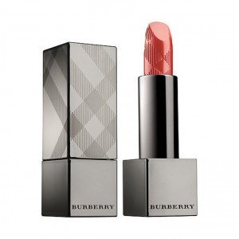

Quay Lại

Tên Sản Phẩm:
Son Burberry Kisses
Mã Sản Phẩm:
5045456429833
Giá Bán:
700.000 đ
Với độ dưỡng ẩm cao, chất son satin mịn màng như bơ giúp tăng độ lên màu sẽ mang đến cho bạn đôi môi mềm mại và gợi cảm nhất, bạn sẽ không lo môi bị thâm bị nếp hay màu bị bột nặng môi khắc phục được nhược điểm gây khó chịu của dòng son lì.
Xuất sứ:
Anh